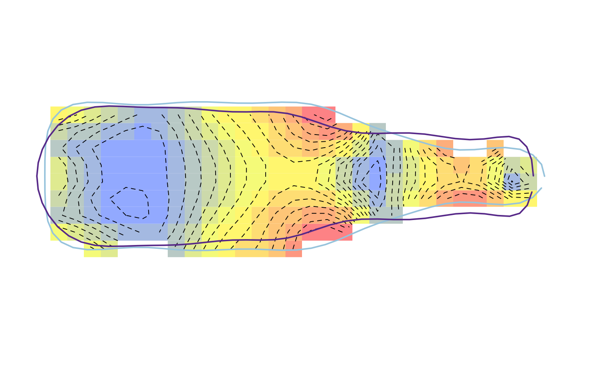

tps_iso calculates deformations between two configurations and map
them with or without isolines.
tps_iso(fr, to, amp = 1, grid = FALSE, over = 1.2, palette = col_spring, iso.nb = 1000, iso.levels = 12, cont = TRUE, cont.col = "black", poly = TRUE, shp = TRUE, shp.border = col_qual(2), shp.lwd = c(2, 2), shp.lty = c(1, 1), legend = TRUE, legend.text, ...)
| fr | The reference \((x; y)\) coordinates |
|---|---|
| to | The target \((x; y)\) coordinates |
| amp | An amplification factor of differences between |
| grid | whether to calculate and plot changes across the graphical window
|
| over | A |
| palette | A color palette such those included in Momocs or produced with colorRampPalette |
| iso.nb | A |
| iso.levels |
|
| cont |
|
| cont.col | A color for drawing the contour lines |
| poly | whether to draw polygons (for outlines) or points (for landmarks) |
| shp |
|
| shp.border | Two colors for drawing the borders |
| shp.lwd | Two |
| shp.lty | Two |
| legend | logical whether to plot a legend |
| legend.text | some text for the legend |
| ... | additional arguments to feed coo_draw |
No returned value
Other thin plate splines: tps2d,
tps_arr, tps_grid,
tps_raw
#>#>x <- mshapes(botF, 'type', nb.pts=80)$shp fr <- x$beer to <- x$whisky tps_iso(fr, to, iso.nb=200, amp=3)tps_iso(fr, to, iso.nb=200, amp=3, grid=TRUE)